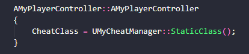
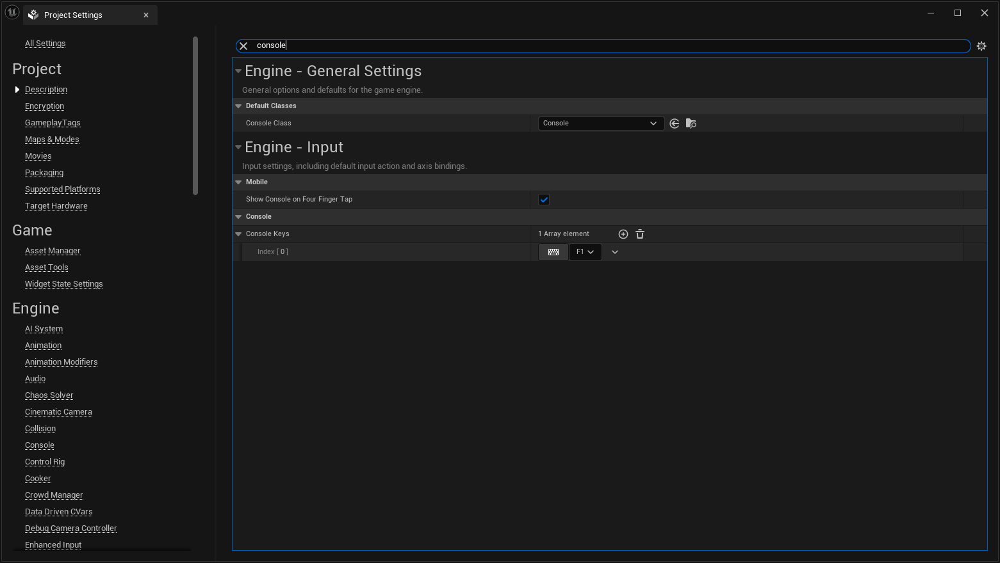
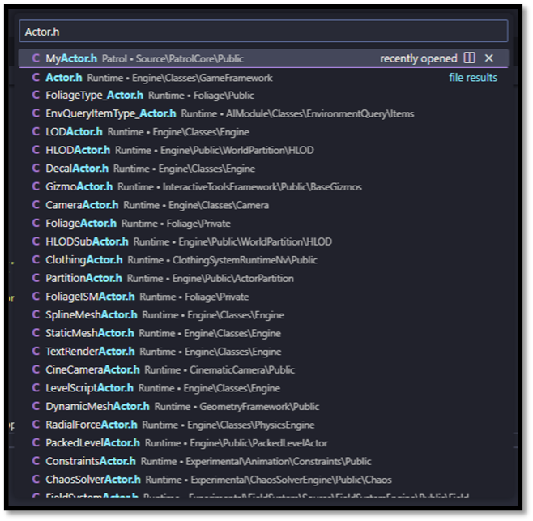
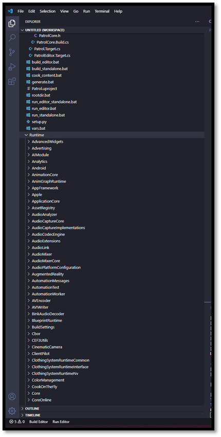
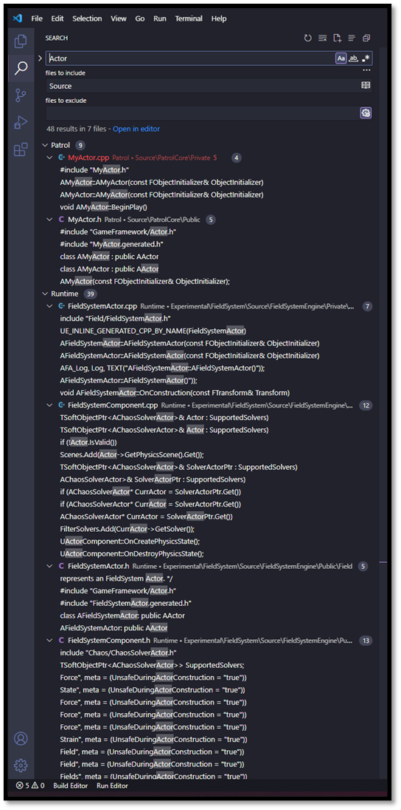
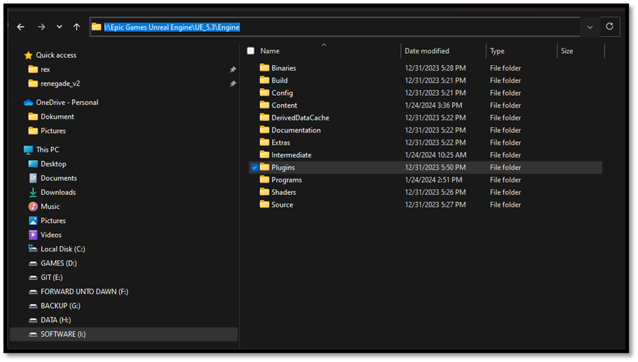

Additional Workflow Items
Console Commands
As a developer most of the time you will not require the use of the full editor. The standalone game is sufficient most of the time. This will make the iterations speed of developing a certain feature a lot faster as you don't have to boot up the entire editor every time while you are testing if the adjustment you made actually works. If you do need to be able to make changes while testing alternatives are available to make this happen. These alternatives come in the form of console commands. Unreal allows you to write custom console commands which can execute certain functionality that adjust the flow or state of your game. You need to be aware that console commands can only be created within certain class and will not function in any other class. Most of the time you will create a new instance of the a CheatManager class and assign this one to the PlayerController

To create an actual console command functions have to be tagged with the Exec category in a UFUNCTION macro UFUNCTION(Exec, Category="Console Commands"). This will make sure Unreal recognized the function and you are able to call it from the standalone binaries.
Note: It might be that the default key to open up the console window within Unreal does not work properly, the reason for this is that different keyboards have different layouts attached to them and the default key " ` " does not function properly on all keyboards. Therefore I recommend to change this key to something a bit more userfriendly such as F1 for instance. You can adjust this button in the Editor.

Looking for files
- If you hit Ctrl+P, you can quickly browse to any file that's been included in the project.

Creating a Code workspace
- You can add ${unreal}/Source/Runtime directory to your project workspace so you have the Unreal source code at your fingertips.
If we add UE's ${unreal}/Engine/Source/Runtime directory, then we'll also have the Engine source at our fingertips. The key distinction here is that where Visual Studio tries to be smart, VS Code just tries to be fast. With Visual Studio, you're dealing with IntelliSense, which has to parse the entire Engine codebase and run extensive static analysis, and then it has to reason about that codebase while working around the fact that huge chunks of it rely on a custom code generation process... and if you ask me, expecting it to be reliably correct and responsive is just too much to ask. Back when I was using Visual Studio, I found I couldn't rely on IntelliSense, and I'd end up just searching through the API documentation all the time. But the code itself contains the exact same documentation you can cut out the middle-man and Ctrl+P your way straight to an answer, faster than it takes for an IntelliSense completion window to appear. This approach keeps you in the driver's seat.

Looking for symbols
- Use CTRL + SHIFT + F to search the entire codebase to see how a symbol is used or referenced

Plugin directory
- Use the ${unreal}/Engine/Plugins directory as a reference on how to structure Unreal modules within your project
A good source of example code is the Engine Plugins directory. If we limit our search there, we can find usage examples that are set up in the same way our project code should be.

Documentation
- Use the Engine Source Code as documentation
I've found that if you treat the Engine source as documentation in and of itself, and if you optimize your workflow for browsing that source, you'll gain a much more intuitive understanding of it over time.